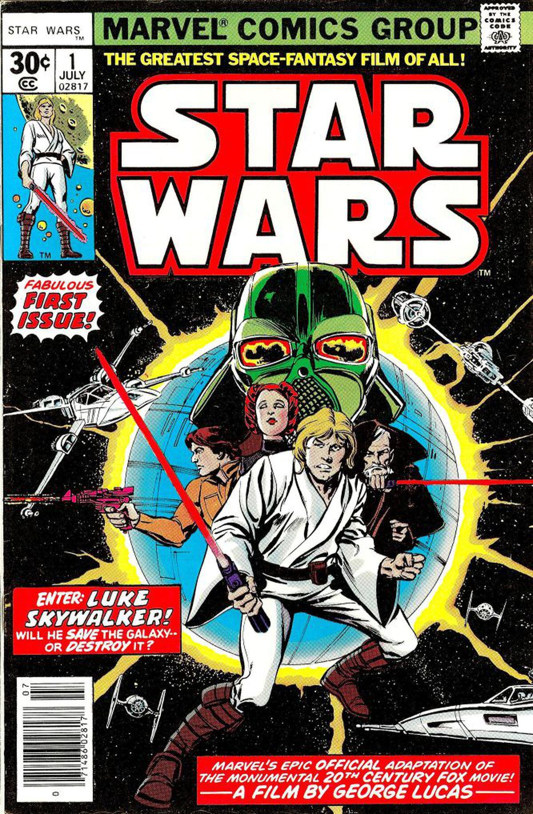

Fecha de Publicacion:
2013
Luke Skywalker esta entrenando bajo la tutela de su maestro
Obi-Wan Kenobi, al mismo tempo que se dirigen a la base de la
resistencia para regresar a la princesa Leia a salvo, sin embargo
un giro de los acontecimientos hace que lleguen a una
instalacion del Imperio, La estrella de la muerte, donde esta
el mismo Darth Veader, ¿podran Luke y sus compañeros lograr escapar
de esta trampa mortal?